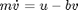
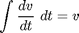
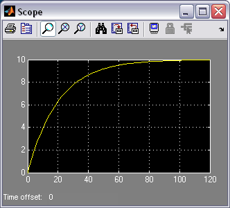

Cruise Control: Simulink Modeling
Contents
Physical setup and system equations
The model of the cruise control system is relatively simple. If it is assumed that rolling resistance and air drag are proportional to the car's speed, then the problem is reduced to the simple mass and damper system shown below.

Using Newton's 2nd law, the governing equation for this system becomes:
(1)
where u is the force generated between the road/tire interface and can be controlled directly. For this example, let's assume that
m = 1000 kg b = 50 N.sec/m u = 500 N
Building the model
This system will be modeled by summing the forces acting on the mass and integrating the acceleration to give the velocity. Open Simulink and open a new model window. First, we will model the integral of acceleration.
(2)
- Insert an Integrator Block (from the Continuous library) and draw lines to and from its input and output terminals.
- Label the input line "vdot" and the output line "v" as shown below. To add such a label, double click in the empty space just above the line.

Since the acceleration (dv/dt) is equal to the sum of the forces divided by mass, we will divide the incoming signal by the mass.
- Insert a Gain block (from the Math Operations library) connected to the Integrator block input line and draw a line leading to the input of the Gain block.
- Edit the Gain block by double-clicking on it and change its value to "1/m".
- Change the label of the Gain block to "inertia" by clicking on the word "Gain" underneath the block.

Now, we will add in the forces which are represented in Equation (1). First, we will add in the damping force.
- Attach a Sum block (from the Math Operations library) to the line leading to the inertia Gain block.
- Change the signs of the Sum block to "+-".
- Insert a Gain block below the Inertia block, select it by single-clicking on it, and select Flip from the Format menu (or type Ctrl-F) to flip it left-to-right.
- Set the block's value to "b" and rename this block to "damping".
- Tap a line (hold Ctrl while drawing) off the Integrator block's output and connect it to the input of the damping Gain block.
- Draw a line from the damping Gain block output to the negative input of the Sum Block.

The second force acting on the mass is the control input, u. We will apply a step input.
- Insert a Step block (from the Sources library) and connect it with a line to the positive input of the Sum Block.
- To view the output velocity, insert a Scope block (from the Sinks library) connected to the output of the Integrator.

- To provide an appropriate step input of 500 at time equal zero, double-click the Step block and set the Step Time to "0" and the Final Value to "u".

You can download a model file for the complete system here, ccmodel.mdl.
Open-loop response
To simulate this system, first, an appropriate simulation time must be set.
- Select Parameters from the Simulation menu and enter "120" in the Stop Time field. 120 seconds is long enough to view the open-loop response.

The physical parameters must now be set. Run the following commands at the MATLAB prompt:
m = 1000; b = 50; u = 500;
Run the simulation (hit Ctrl-T or select Start from the Simulation menu). When the simulation is finished, double-click on the Scope and hit its autoscale button. You should see the following output.

Observing the above, we would like to improve the response of the cruise control system. The model created here will be employed for controller design and analysis within Simulink in the Cruise Control: Simulink Controller Design page.